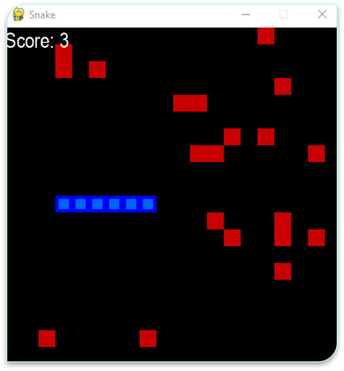

The videos below display the results obtained from our AI Snake program
This first video displays the results when no reward shaping training has been completed, meaning the reinforcement learning has not been utilised and the algorithm is relying solely on the DQN properties
This next video shows our initial training properties for a 5-minute run utilising arbitrary parameters for reinforcement learning. The reward is not set high enough in this model resulting in poor results as can be seen in the end graph. The
The next video shows the effect of improvements made to the reward shaping through increasing rewards and tuning reinforcement learning parameters. This set runs for 100 iterations and demonstrates the improved strategy from the previous examples.
This final training video demonstrates the current training model utilising only a single apple due to having been fed data from previous multi-apple training datasets. Feeding in these datasets greatly improved the accuracy of the training model which can be seen in the overall scores shown in the graph.
The final trained model is shown in the video below.